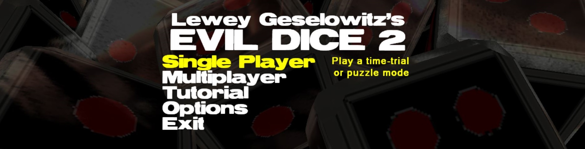
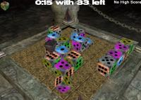
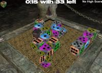
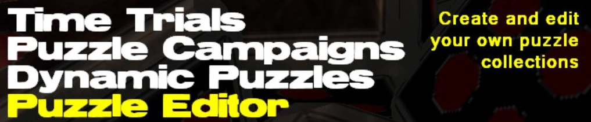
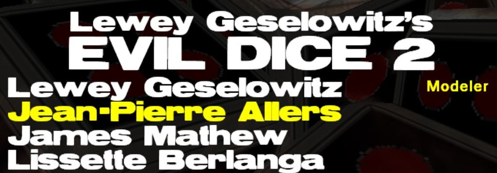

Evil Dice 2

 

{kind=link}
Play on Web
|
Download and Install
Web Version: Dice WalkerPre-Alpha Windows App: EvilDice2.zip (0.7.9c)
INSTALL_THESE_FIRST: After extracting EvilDice2.zip, go to the Install_these_first folder, install the font and run DXSETUP.exe for the drop of DirectX for August 2005 which is included. (Microsoft SDK for 3D).
IF IT DOESN'T WORK: Either contact me (LeweyG@microsoft.com), or try Evil Dice 1.0, it is much more stable... but not as cool.
Evil Dice (1.0)
For Windows Pro
|
For Pocket PC
|
For Mac OS X
|
Updates
- Version 0.7.9b (9/4/2006)
- Added music with XML controllers there of.
- Version 0.7.9 (9/4/2006)
- Player stats (hold SPACE), camera effects, input bugs fixed, misc bugs.
- Version 0.7.8 (8/19/2006)
- Support for a no-audio mode added
Features
- 
- Single Player
- Time Trial Modes
- Ancient Evil
- Overwhelming Evil
- Feed The Evil
- Rush Of Evil
- Tutorial
- Dynamic Puzzles
- Eradicate Evil
- The Evil Number
- Eternal Evil
- Puzzle Campaigns! (prewritten puzzles)
- Comes with 3 campaigns TODO
- Downloadable campaigns
- Puzzle Editor
- Create your own puzzle campaigns
- Easy to learn and use (integrated into game)
- Post your campaigns online
- Multiplayer
- Game Modes
- Ancient Evil
- Lesser Of Two Evils
- Battling For Evil
- Clamoring For Evil
- Overwhelming Evil
- Local Multiplayer
- Up to 6 people per computer
- Support for 2 Joypad players in addition to 4 keyboard players
- Select Board Sizes: 5, 7, 9, 11
- Networked Multiplayer TODO
- Connect through LAN, IP or LeweyG.com
- Multiple players per computer (up to 6)
- Team Configurations: Individual, Co-op, Choice (Choice is TODO)
- Vs. Evil Dice (1)
- Improved graphics with more effects
- Improved user interface, menus, etc.
- Obvious stuff: multiplayer, game modes, puzzle campaigns, puzzle editor, etc.
Credits
